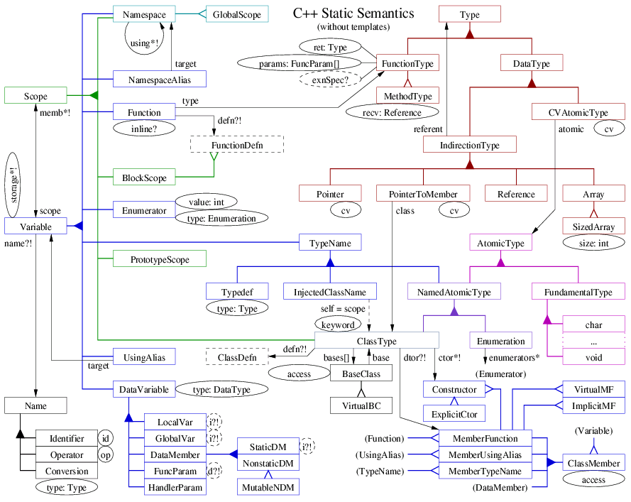

C++ Entities and Relationships
The following diagram
(xfig sources: er.fig,
postscript: er.ps)
shows the various concepts in C++ static (compile-time) semantics,
and their interrelationships. Notationally, it is a mixture of
traditional Entity-Relationship diagrams and UML, with some of my
own ideas thrown in:
- Entities are shown in boxes. A dashed box indicate an entity that
with attributes and/or relationships that are elided from the
diagram.
- Attributes are in ellipses. Dashed ellipses similarly indicate
elided detail.
- Relationships are thin lines connecting entities. Either or both
end of a relationship may be named. Each endpoint of the relationship
indicates a cardinality, which is the number times that a
single instance of the entity may participate in the relationship:
- Name with no annotation: cardinality is one.
- Name with "?" annotation: zero or one.
- Name with "*" annotation: any number, including zero.
- Name with "[]" annotation: relation tuples are ordered,
forming a sequence; cardinality is anything.
- Unnamed arrowhead: cardinality is anything. The notation is meant
to suggest a pointer, where the referent typically does not want or
need to know that something is pointing at it.
- Attributes can be given "?", "*" and "[]" annotations, with similar
meanings as for relationships. In fact, attribute notation is used
interchangeably with relationship notation where convenient.
- Specialization (often conceptualized as inheritance) is indicated
by thick lines connecting entities, with triangular split points.
A solid triangle indicates total specialization (meaning
the superclass is abstract) while an open triangle indicates
partial specialization. Color is used to emphasize
important specialization hierarchies.
- What is the difference between a partial specialization and
an optional ("?") attribute or relationship? The former cannot
change during the entity's lifetime, while the latter can.

The diagram does not include templates and does not include executable
AST fragments like statements and expressions, other than showing
where they fit in. I plan to make another diagram for templates, and
possibly another for executable AST fragments. I also plan to
eventually extend this diagram with references to the standard itself,
so one could use it to quickly find all sections relevant to a
particular topic.
Note that the names used in the diagram above do not correspond
exactly with either the terminology in the standard (which is often
unnecessarily vague) nor that used in Elsa (which makes fewer
distinctions, for example among kinds of Variables). Elsa also does
not use multiple inheritance to the degree suggested by naively
interpreting specialization as inheritance in this diagram.
Furthermore, even Elsa's data model is slightly different; for
example, in Elsa (at the moment), exception specs are attached to
FunctionTypes, but as indicated in the diagram, they should be
attached to (Function) Variables instead. This discrepancy is
essentially a bug in Elsa. There are other discrepancies (such as the
representation of Names) that are due to implementation techniques,
not bugs.